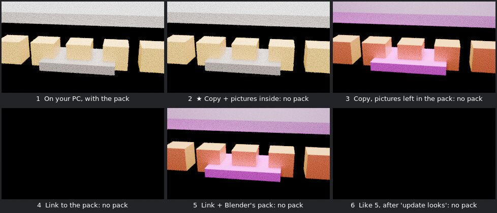

The Fresing assets pack – the plan
Task 0344 · findings only · 25 Nov 2026. ★ = recommended (always the first choice). Every choice has a short explanation under it. Measured on the 4-core test machine (no graphics card) with Blender 5.2.3.
- Nothing breaks: without the pack the app is exactly today's app. Every Fresing look keeps its name; when the pack has a better version of it, the app uses that; otherwise it uses today's built-in look.
- Projects carry a copy of every pack look they use, pictures included. Tested: such a project opens complete on a PC without the pack – also on a client's PC and after the looks were updated. A link to the pack went black.
- Old projects never change by themselves. A button "Use the new Fresing looks" shows before / after and changes only after your OK.
- Size: pictures inside projects at normal size (2k). The pack: up to about 300 MB at first, downloaded by the installer like Blender, updated apart from the app.
- Making the looks: workers build them in a private repository; you get a pick page per set with today's look next to 2–3 new ones; nothing ships without your OK, and your choices are written down per set.
- Order: first the invisible groundwork (6 tasks), then the connection points, then one set at a time – paints first. Licence, first-start question, nudge line and shop last, when you say so.
How it works
Fresing assets pack
A folder next to the app on your PC, with its own licence and version (1.0, 1.1 …)- materials and finishes
- studio light and 360° photos
- environments, props, people
- learning and showcase projects
One list in the app
Every part of the app asks by name, e.g. "paint, satin" or "light: product studio": 1 Already in this project? → use that copy. 2 In the pack, and switched on? → copy it into the project, pictures inside. 3 Otherwise → today's built-in look with the same name.Your project (.blend)
Holds its own copies, so it opens complete:- on a client's PC
- from a backup
- in the render queue
- after a pack update – or without the pack
The test: one project on a PC without the pack
A made-up scene with five pack items (a paint, a concrete floor with pictures, a studio light, a small workshop, a pallet). The project file alone was opened on a "client's PC" where the pack is missing.

- 2 ★ Copy + pictures inside – looks exactly like 1. Also right after "update looks".
- 3 Copy, pictures left in the pack – pink: the pictures are missing.
- 4 Link to the pack – black: the linked parts are gone.
- 5 and 6 Blender's new "link + pack" – pink, and after an update of the looks black again.
Pictures and memory
Render memory for one look with three pictures (colour, shine, relief), measured in Cycles:
| Picture size | inside the project | read from the pack folder with Blender's new texture cache | project file grows by |
|---|---|---|---|
| 1k (Draft) | 30 MB | 25 MB | 3 MB |
| 2k (Normal) ★ | 66 MB | 43 MB | 13 MB |
| 4k (Final) | 210 MB | 43 MB | 50 MB |
Measured at 960 × 540 pixels; a bigger render needs more. The texture cache only works for pictures read from a folder, never for pictures inside a project. So: 2k inside projects; 4k later only for Final renders, read from the pack. The test pictures are made up and noisier than real photos, so real files will be smaller.
Your choices
Your picks – copy this line and paste it to the lead chat:
What follows if you agree
- Invisible groundwork (6 tasks): the pack format and the app's list; copying looks into projects; Fresing Settings > Assets; the installer and pack updates; tests with and without a pack (plus the private repository); the "Use the new Fresing looks" button. The app looks the same afterwards.
- The connection points in materials, finishes, light, surroundings, learning and the small looks – tested with a made-up test pack. Still no visible change.
- One set at a time (paints first): a pick page per set with today's look next to the new ones, your choice, your OK, a short record of your choices, then the pack version that brings it.
- Last, when you decide to sell: the licence texts, the first-start question, the nudge line, the shop and the trademark.
Full details, file names, measurements and the task table: the report in tasks/0344-study-assets-pack-plan.md on branch task/0344-study-assets-pack-plan. The test itself: tools/assets_pack_proto/.